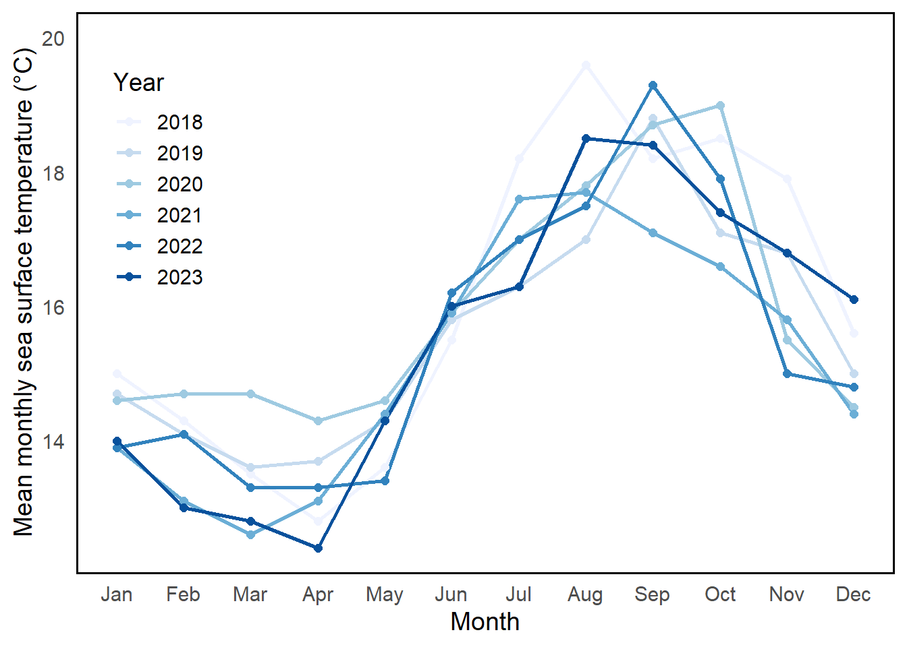
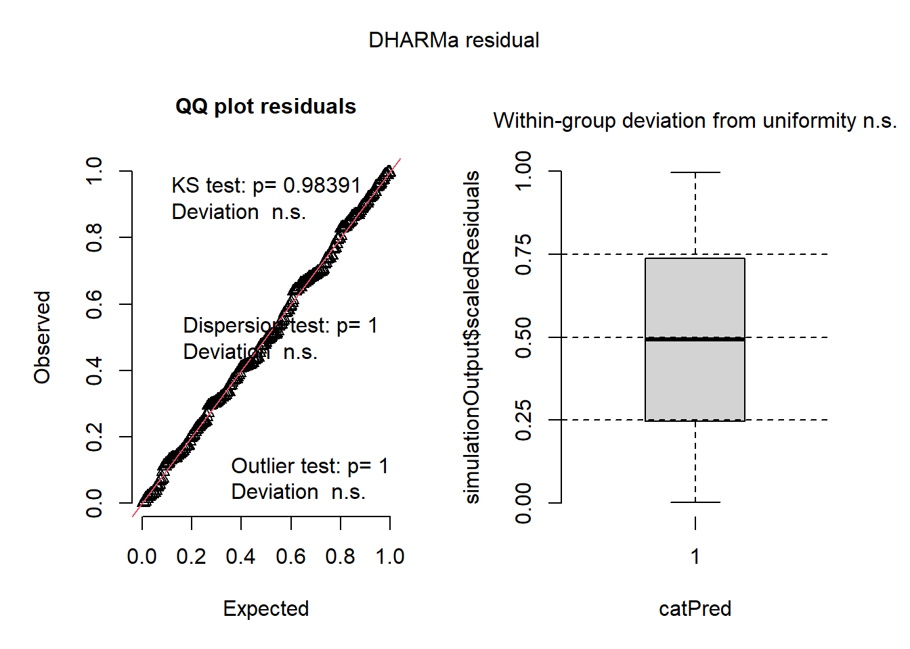
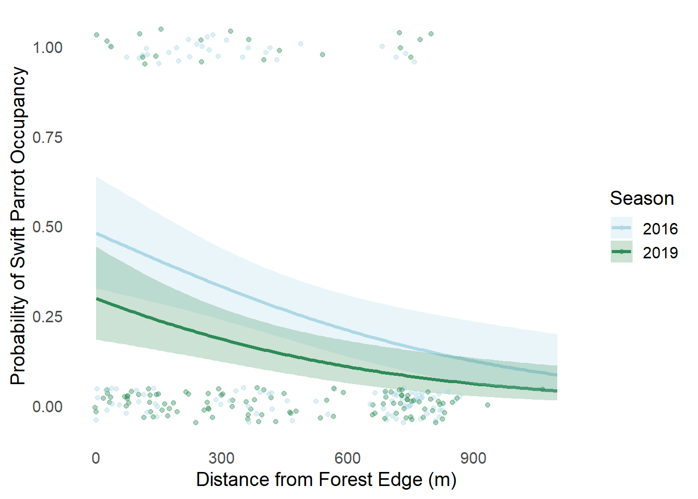

#Load in packages
library(tidyverse)
library(here)
library(janitor)
library(dplyr)
library(ggplot2)
library(DHARMa)
library(MuMIn)
library(ggeffects)
#Read in sea surface temperature data
sst <- read_csv(here("data", "SST_update2023.csv"))
#read in data for problem 3
nest_boxes <- read_csv(here("data", "occdist.csv"))ENVS 193DS - Final
Github Repository
https://github.com/ScottWag/ENVS-193DS_spring-2025_final
Setup
Problem 1. Research writing
a. Transparent statistical methods
In part 1, they used a Pearson correlation coefficient to test the linear relationship between the two variables, distance from headwater (km) and nitrogen load (kg year⁻¹). In part 2, they used a one-way ANOVA to test for differences in average nitrogen load among the six different nitrogen sources.
b. More information needed
Two additional tests/pieces of information that should be included in order to provide more context for the results would be a test for effect size (eta-squared) and a data visualization (boxplot or bar chart). An effect size test tells the viewer whether the observed differences are statistically significant, represented by a p-value. A data visualization helps communicate the patterns, variability, and group differences in a more accessible way by making the analysis visible.
c. Suggestions for rewriting
For part 1: Annual nitrogen load (kg year⁻¹) increased with additional distance from the river’s headwaters (km), suggesting a cumulative impact of nitrogen sources downstream. (Pearson’s correlation: r = correlation coefficient, p = 0.03, α = significance level)
For part 2: Average nitrogen load differed significantly between source types, indicating that some sources contribute more to total nitrogen input than others. (One-way ANOVA: F = F statistic, df = degrees of freedom, p = 0.02, η² = effect size, α = significance level )
Problem 2. Data visualization
a. Cleaning and summarizing
#Clean the data
sst_clean <- sst %>%
mutate(
date = ymd(date), # converts the 'date' column to date format
year_num = year(date), # extracts the numeric year from the date
month_num = month(date), # extracts the numeric month from the date
month = factor(substr(month.name[month_num], 1, 3), levels = substr(month.name, 1, 3), ordered = TRUE) # converts months to three letter ordered factor
) %>%
filter(year_num >= 2018 & year_num <= 2023) %>% # only include years 2018-2023
mutate(year = as.factor(year_num)) %>% #converts numeric year to factor
group_by(year, month) %>% # groups by year and month for monthly averages
summarise(mean_monthly_sst = round(mean(temp, na.rm = TRUE), 1), .groups = "drop") # computes mean sst and round to 1 decimal, ungroup after summarizing
#Display 5 rows
slice_sample(sst_clean, n =5)# A tibble: 5 × 3
year month mean_monthly_sst
<fct> <ord> <dbl>
1 2023 May 14.3
2 2020 Aug 17.8
3 2018 Nov 17.9
4 2023 Sep 18.4
5 2019 Aug 17 #Display the structure of cleaned data
str(sst_clean)tibble [72 × 3] (S3: tbl_df/tbl/data.frame)
$ year : Factor w/ 6 levels "2018","2019",..: 1 1 1 1 1 1 1 1 1 1 ...
$ month : Ord.factor w/ 12 levels "Jan"<"Feb"<"Mar"<..: 1 2 3 4 5 6 7 8 9 10 ...
$ mean_monthly_sst: num [1:72] 15 14.3 13.5 12.8 13.6 15.5 18.2 19.6 18.2 18.5 ...b. Visualize the data
#Create visual in ggplot
ggplot(sst_clean, aes(x = month, y = mean_monthly_sst, group = year, color = year)) +
geom_line(linewidth = 1) + # adds lines for each year
geom_point(size = 2) + # adds dots for each monthly SST value
scale_y_continuous(limits = c(12.4,20)) + # custom y-axis values
labs(
x = "Month", # x-axis label
y = "Mean monthly sea surface temperature (°C)", # y-axis label
color = "Year" # legend title
) +
theme_minimal(base_size = 14) + # clean, minimal theme with text size
theme(
legend.position = c(0.1, 0.7), # places legend on plot with location
axis.text.x = element_text(angle = 0), # ensures month labels are horizontal
panel.grid.minor = element_blank(), # removes major gridlines
panel.grid.major = element_blank(), # removes minor gridlines
panel.border = element_rect(color = "black", fill = NA, size = 1) # adds black border
) +
scale_color_brewer(palette = "Blues") # applies sequential blue color by year
Problem 3. Data analysis
a. Response variable
In the data set, 1s represent nest boxes occupied by Swift Parrots, the target species of the study. 0s represent boxes that were not occupied by Swift Parrots, meaning they either did not use it, or were out competed by another species.
b. Purpose of study
The study compares nest box usage between Swift Parrots, Common Starlings, and Tree Martins. The main difference is that Swift Parrots, the conservation target species, are critically endangered and the study goal is to understand whether the nest boxes help the target species or benefit its competitors.
c. Difference in “seasons”
The difference in “seasons” refers to the years 2016 and 2019, when the box occupancy data was collected due to mast tree flowering events triggering Swift Parrot breeding at the study site. The years differ in terms of the population dynamics, environmental conditions, and competitive pressures of the two other birds. ## d. Table of models
| Model number | Season | Distance to forest edge | Model description |
|---|---|---|---|
| 0 | Null model | ||
| 1 | X | X | Saturated model |
| 2 | X | Season only | |
| 3 | X | Distance from forest edge only |
e. Run the models
# Run models
# model 0: Null model
model0 <- glm(sp ~ 1, family = binomial, data = nest_boxes_clean)
# model 1: Saturated model
model1 <- glm(sp ~ season + edge_distance, family = binomial, data = nest_boxes_clean)
# model 2: Season only
model2 <- glm(sp ~ season, family = binomial, data = nest_boxes_clean)
# model 3: Distance from forest edge only
model3 <- glm(sp ~ edge_distance, family = binomial, data = nest_boxes_clean)f. Check the diagnostics
# check for diagnostics using DHARMa package
# For model 0
residual0 <- simulateResiduals(model0)
plot(residual0)
# For model 1
residual1 <- simulateResiduals(model1)
plot(residual1)# For model 2
residual2 <- simulateResiduals(model2)
plot(residual2)# For model 3
residual3 <- simulateResiduals(model3)
plot(residual3)
g. Select the best model
# use MuMIn pakage to select the best model through AIC
model.sel(model0, model1, model2, model3)Model selection table
(Int) edg_dst ssn df logLik AICc delta weight
model1 -0.07749 -0.002078 + 3 -110.103 226.3 0.00 0.837
model3 -0.50620 -0.001967 2 -112.809 229.7 3.36 0.156
model2 -0.95020 + 2 -116.160 236.4 10.06 0.005
model0 -1.29000 1 -118.407 238.8 12.52 0.002
Models ranked by AICc(x) The best model, as determined by Akaike’s Information Criterion (AIC), was the saturated model. The model includes both season and distance to forest edge as predictors, with the response variable as nest box occupancy (represented as 1 for occupied and 0 for unoccupied).
h. Visualize model predictions
# get predictions from model1 using ggpredict
prediction <- ggpredict(model1, terms = c("edge_distance [0:1100 by=10]", "season"))
# plot predictions
ggplot(prediction, aes(x = x, y = predicted, color = group)) +
geom_line(linewidth = 1.2) + # predicted line
geom_ribbon(aes(ymin = conf.low, ymax = conf.high, fill = group), alpha = 0.25, color = NA) + # 95% confidence interval
geom_jitter(data = nest_boxes_clean, aes(x = edge_distance, y = sp, color = season),
height = 0.05, width = 15, alpha = 0.4, inherit.aes = FALSE) + # data points
labs(
x = "Distance from Forest Edge (m)", # x-axis label
y = "Probability of Swift Parrot Occupancy", #y-axis label
color = "Season", # color by season
fill = "Season" # fill by season
) +
theme_minimal(base_size = 14) +
theme(panel.grid = element_blank()) + # remove gridlines
scale_color_manual(values = c("2016" = "lightblue", "2019" = "seagreen")) + # custom colors (lines/points)
scale_fill_manual(values = c("2016" = "lightblue", "2019" = "seagreen")) # custom colors (fill)
i. Write a caption for your figure
Figure 1. Predicted probability of Swift Parrot nest box occupancy by distance from forest edge across two breeding seasons (2019 and 2019).
The figure shows predicted probabilities of Swift Parrot occupancy in nest boxes as a function of distance from forest edge (m) for two breeding seasons (2016 and 2019). The predictions were generated from the best fitting model according to Akaike’s Information Criterion (AIC) and are visualized through a binomial generalized linear model, using ggpredict and ggplot. Seasons are differentiated by color with 2019 in green and 2016 in light blue. Shaded ribbons represent 95% confidence intervals (color coded by season). Points represent observed occupancy values (1 = occupied, 0 = unoccupied) and are jittered to reduce overlap.
Data Citation: Stojanovic, Dejan et al. (2021). Do nest boxes breed the target species or its competitors? A case study of a critically endangered bird [Dataset]. Dryad. https://doi.org/10.5061/dryad.83bk3j9sb
j. Calculate model predictions
# calculate model predictions
model_predict <- ggpredict(model1, terms = c("edge_distance [0,900]", "season"))
model_predict# Predicted probabilities of sp
season: 2016
edge_distance | Predicted | 95% CI
--------------------------------------
0 | 0.48 | 0.33, 0.64
900 | 0.12 | 0.06, 0.24
season: 2019
edge_distance | Predicted | 95% CI
--------------------------------------
0 | 0.30 | 0.18, 0.44
900 | 0.06 | 0.03, 0.13k. Interpret your results
In both 2016 and 2019, the predicted probability of Swift Parrot box occupancy is highest at the forest edge (0m) and decreases with increasing distance (900m). More specifically, occupancy probability dropped from 0.48 to 0.12 in 2016 and 0.30 to 0.06 in 2019 (See table from part j). The distinct negative relationship suggests that Swift Parrots strongly prefer nest boxes closer to the forest edge (See Figure 1). Biologically, the trend reflects the species’ reliance on forest resources such as proximity to native vegetation, which lacks in accessibility with distance from edge. Inversely, Tree Martins prefer occupying boxes further from the forest edge, likely due to tolerance of open habitats and alternative nesting ecology. Common Starlings on the other hand, also showed a negative relationship between occupancy probability and distance potentially equating to additional competition for Swift Parrots.
Problem 4. Affective and exploratory visualizations
a. Comparing visualizations
There are many differences between my affective visualization from homework 3 and my exploratory visualizations from homework 2. In my homework 2 visualizations, I created two quantitative graphs (box plot and scatter plot) to show data patterns such as daily phone usage and pickups between my two categories (school day or weekend). In contrast, my homework 3 visualization uses a similar but more stylized approach, representing the categories by symbols, while still displaying the difference in daily usage between them. My affective visualization has more personal identity, represented as my own phone screen and serves as both an artistic and statistical approach. All three visualizations are centered around the theme of phone usage, the data that I personally collected and the impact that it has on my daily life. They all serve the same role of telling a story that the viewer can understand. I cannot see any patterns from my scatterplot because I did not us the same variables. However, from my box plot I can see the same trend in difference of means that I can also see in my affective visualization. I found that I use my phone more on weekdays than weekends, but not a significant amount. In week 9, the feedback that I got in workshop was to add labels to my affective visualization to give more context to what I am displaying. I decided to add the numbers in minutes that I use my phone per day and label each category in addition to the symbols. Although I had the information in my write up, I think it gives the viewer a better understanding of the story that I am trying to tell.
b. Sharing your affective visualization
Done in section